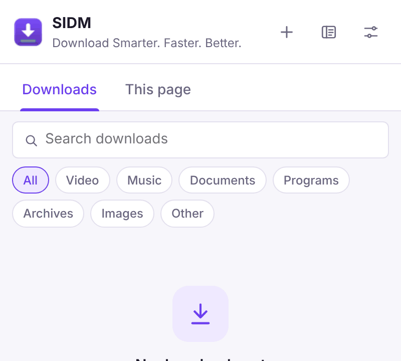

SIDM - Smart Internet Download Manager
Download Smarter. Faster. Better.
One free download manager for your browser, your Windows PC and your Android phone. Save videos from the sites you use, speed up big files and keep every download in order. No account. No tracking.
SHA-256: 2322327b4b1b27b54ae02f480feaf5a09c73c7d3a4db7eac99e26a6301184101
The SIDM products
Part 1 · On your computer
Chrome · Edge · Brave
SIDM for Chrome
A download manager that lives in your browser's toolbar. It catches your downloads, finds the videos on the page you are watching and saves them for you.


How it works
- It watches the page When a video plays, SIDM reads the streams the player loads and the video list in the page's own data, so it knows every quality the site has.
- It saves in the browser It fetches the video pieces six at a time and joins picture and sound into one MP4, right in the browser. No extra software.
-
It files everything
Every download goes to
Downloads\SIDM, sorted into folders such as Video, Music and Documents, and shows up in the popup and the manager.
What it does
-
Download button on videos
A Download button appears over videos on Facebook, X, LinkedIn, Instagram, Reddit and many other sites. Highest quality first, or pick a smaller one or audio only.
-
Organised downloads
Files land in folders by type, so your Downloads folder stays tidy without you lifting a finger.
-
Progress window
Size, speed and time left for each download, with pause, resume, cancel, a speed limit and what to do when it finishes.
-
Download manager
A full page with categories, a sortable list, start and stop for the queue, and a status bar. Select many rows and act on them at once.
-
Queue and scheduler
Line up big files, start the queue at a set time on chosen days, cap the speed, and get a notification or close the browser when it is done.
-
Link grabber
Collect every file link on a page, filter by name or type, tick the ones you want and download them in one go.
-
Media detection
When a page plays a video or audio stream, SIDM notices and lists it in the popup's This page tab, ready to save.
-
English and বাংলা
Switch language and light or dark theme in Settings at any time. It follows your system by default.
-
Private by design
No account, no analytics, no ads. Your settings, queue and history stay on your PC. Read the privacy policy.
Install it (once)
SIDM is not in the Chrome Web Store, so you load it yourself. It takes about a minute.
-
Unzip to a permanent folder
Download the ZIP, right-click it and choose Extract All. Put the folder somewhere it can stay, for example
Documents\SIDM. The browser loads SIDM from this folder every time it starts, so don't leave it in Downloads or delete it. -
Load the extension
Open the extensions page, switch on Developer mode, click Load unpacked and choose the
extensionfolder inside the folder you just unzipped.Where to find the extensions page in each browser Chrome chrome://extensions, switch in the top-right corner.Edge edge://extensions, switch in the left sidebar.Brave brave://extensions, switch in the top-right corner.Then click the puzzle-piece icon in the toolbar and pin SIDM.
Use it
Four things you will do most.
-
Save a video
Play the video for a few seconds, then click Download on it and pick a quality. The menu follows the download until it says Saved.
-
Download a file
Click a download link as usual and it shows up in SIDM with its progress window, or right-click a link and choose Download link with SIDM. Paste many links at once with Add links.
-
Grab a whole page
Right-click the page, choose Grab all links on this page, filter the list and click Download selected.
-
Keep track
Click the SIDM icon for the latest downloads, or open the download manager for the full list, the queue and the scheduler.
Windows 10 and 11 · optional
SIDM desktop program for Windows
A small program that runs next to the extension. You only need it for YouTube and for the fastest big-file downloads; everything else works without it.
How it works
- It starts with the browser Once installed, the extension finds it by itself and talks to it directly on your PC. Nothing goes through a server of ours.
- It uses proven tools It runs yt-dlp and ffmpeg to read YouTube and over a thousand other sites, and joins picture and sound into one file.
- It splits big files Files of 1 MB or more, on servers that allow it, are downloaded over up to 16 connections at once and can be paused and resumed.
What it adds
-
YouTube downloads
Videos and Shorts in the quality you choose, or audio only. The first YouTube download shows a short notice about YouTube's terms.
-
Size of every quality
The quality menu shows how big each file will be, for example “≈ 98 MB”, and hides qualities the video does not have.
-
Choose where to save
Each video opens Windows' folder window, and the last folder is suggested next time. You can switch this off in Settings.
-
Up to 16 connections
Big files come down in parts at the same time, with a parts view, resume after a pause and a speed limit for one file or all of them.
-
Keeps itself current
Run Update SIDM tools from the Start menu, or run Setup again, to fetch the newest yt-dlp when a site changes.
-
No admin rights
Installs just for you, in your own user folder, and removes cleanly from Windows Settings like any other app.
Install it
-
Get SIDM Setup
In SIDM Settings, click Install SIDM for Windows (Setup comes inside the extension ZIP), or download SIDM Setup (164 KB).
SHA-256:
f156fc72efd6362690c0e1c53453cfee8ed9672c7a8f8439dfb61a58baa8ceb9 -
Run it and click Install
Setup fetches its tools (about 200 MB) and connects to Chrome, Edge and Brave. When it is done, the extension's Settings page turns green by itself.
Prefer a folder you control? The companion ZIP for Windows (27 KB, SHA-256 7c31d357107afd98ce8472a724c7fdc6260b208c9dd02aac695b82173b5138a5) does the same with install.bat, a plain text script you can read in Notepad.
Use it
There is nothing new to learn: you keep using the extension.
-
On YouTube
Open a video and click Download on it. The menu says it is working with the SIDM desktop program and shows the size of each quality.
-
Pick a quality and a folder
Click a quality, choose a folder in the window that opens, and the menu shows “Downloading… 12%” until it says Saved.
-
Big files
Download as usual. SIDM sends large files to the program, which splits them across connections. Watch the parts in the progress window.
-
If something fails
The menu shows the reason. Copy debug info collects what SIDM saw on the page, to send with a bug report.
Android 8 and newer
SIDM for Android
Save videos from Facebook, Instagram, TikTok, X, YouTube and over a thousand other sites, and files from any link, straight to your phone. Free, no account. It is not in the Play Store, so you install it from here.
SHA-256: 597107f1596d44191063e99c874de0102d60034663b47c533f446da15bd41244
Phone older than about 2017? Try the 32-bit version (52.4 MB, SHA-256 49f89d597393b14487d57d6e71bb231e89eb40704d7f843d3434d154a00ee502).
How it works
- Everything runs on the phone yt-dlp and ffmpeg are built into the app, so it reads the video and joins picture and sound without any server in between.
- Its own fast engine Files download over several connections at once and keep going in the background, even with the screen locked.
- It stays up to date The video engine updates itself once a day, so sites keep working when they change, and SIDM tells you when a new app version is out.
What it does
-
Share to SIDM
From Instagram, TikTok, Facebook, YouTube, X or any app, tap Share and pick SIDM. Or paste a link.
-
Any quality, or MP3
The original quality comes first. Choose a smaller one to save space, or audio only as an MP3.
-
Built-in browser
Browse a site inside SIDM and tap Download on what plays. Sign in there for posts only your account can see.
-
Pause, resume, Wi-Fi only
Pause and resume without starting over, wait for Wi-Fi, set a speed limit and how many downloads run at once.
-
Straight to your Gallery
Finished files go to Downloads/SIDM, so videos appear in your Gallery and files in the Files app. Open, share or delete from the list.
-
English and বাংলা, no tracking
Switch language and light or dark theme in Settings. No account, no ads, no analytics.
Install it
-
Download on your phone
Open this page on your Android phone and tap Download for Android. If Chrome asks whether to keep the file, tap Download anyway.
-
Install it
Tap the downloaded file. Android asks once to allow installs from your browser: tap Settings, switch on Allow from this source, go back and tap Install. If Google Play Protect says the app is from an unknown developer, tap More details, then Install anyway.
Use it
-
Share a video
In Instagram, TikTok, Facebook, YouTube or X, tap Share, then SIDM. Pick the quality and tap Download.
-
Paste a link
Copy any video or file link, open SIDM and paste it. For a file, SIDM shows its name and size before it starts.
-
Find it
Follow progress in SIDM or the notification. When it is done, tap Open or find it in your Gallery.
On an iPhone? A SIDM web app for iPhone is planned for later. There is no iPhone app yet.
Guides
How to download from your favourite sites
Short, step-by-step guides for a computer and an Android phone.
- Download Facebook videosReels, feed videos and Watch, in HD.
- Download Instagram reelsReels and video posts, to PC or phone.
- Download TikTok videosSave TikToks as MP4 or MP3.
- Download X (Twitter) videosVideos and GIFs from posts.
- Download LinkedIn videosVideos from posts, with their sound.
- Download Reddit videosWith sound, joined into one MP4.
- Download Vimeo videosPublic and embedded Vimeo videos.
- Download YouTube videosVideos, Shorts and audio, with sizes shown.
Questions and answers
Why is it not in the Chrome Web Store or Play Store?
Neither store accepts apps that download videos from social sites. Rather than remove that feature, we publish SIDM here for you to install yourself. It is the same kind of extension and app, just installed by hand.
Because the extension is loaded in Developer mode, some browsers show a reminder about developer-mode extensions when they start. You can close it.
Do I need the Windows desktop program?
Most people don't. The extension saves videos from most sites on its own. Add the desktop program if you want YouTube, the size of each quality before you download, a folder choice for each video, or up to 16 connections for big files.
Can it download from YouTube?
Yes, with the Windows desktop program on a computer, or with the Android app. YouTube scrambles its video streams, so the extension alone cannot save them. YouTube's Terms of Service do not allow downloading except where YouTube offers a download button, so the first YouTube download shows a notice: only save videos you own or have permission to save. You are responsible for following those terms. You can switch YouTube off in Settings.
Which videos won't work?
Anything protected by DRM, such as Netflix, Prime Video, Disney+ and Spotify. SIDM detects these and refuses; it does not try to get around copy protection.
Live streams cannot be saved while they are live. Private videos and members-only or paid content you cannot see will also fail. If you can't play it, SIDM can't save it.
A site that used to work stopped working. What do I do?
First play the video for a few seconds and click Download again: the extension saves what the page plays, so it needs the video to start. Sites also change how they serve video now and then; a new SIDM version fixes that, and the popup shows Update available when there is one.
With the Windows desktop program, open the Start menu and run Update SIDM tools to fetch the newest yt-dlp. The Android app updates its video engine by itself every day.
Is it safe?
SIDM has no account, no analytics and no ads, and it never sends your browsing to us. The extension is plain JavaScript you can read, and on its own it installs nothing else. Only the optional desktop program downloads tools: yt-dlp, ffmpeg, Deno and a small embedded Python, all open source, fetched from their public release pages. The source code of every part, including the Android app, is public.
The extension asks for broad permissions because a download manager has to see downloads and media on any site. Our privacy policy explains each one.
Does it work on Mac or Linux? What about iPhone?
Yes for Mac and Linux: the same extension ZIP works in Chrome, Chromium, Edge or Brave. Load it the same way as above.
For YouTube, the optional desktop program has a Mac and Linux ZIP (29 KB, SHA-256 f937287f71d002c9dfd7fd0ffc2efe6a1fd7e5a235b938bd288739698f915e7a). Extract it next to the extension, open Terminal in the companion folder and run bash install.sh. No sudo needed. It uses the Python 3 that comes with your system (on a Mac, if you are asked to install the Command Line Tools, say yes), downloads yt-dlp and ffmpeg into that folder (on a Mac it uses Homebrew's ffmpeg if you have Homebrew), and connects them to your browsers. To update yt-dlp later, run ./yt-dlp -U in the same folder.
Browsers installed as Snap or Flatpak packages on Linux cannot start the desktop program; use the browser's regular package instead.
For iPhone, a SIDM web app is planned for later. There is no native iPhone app.